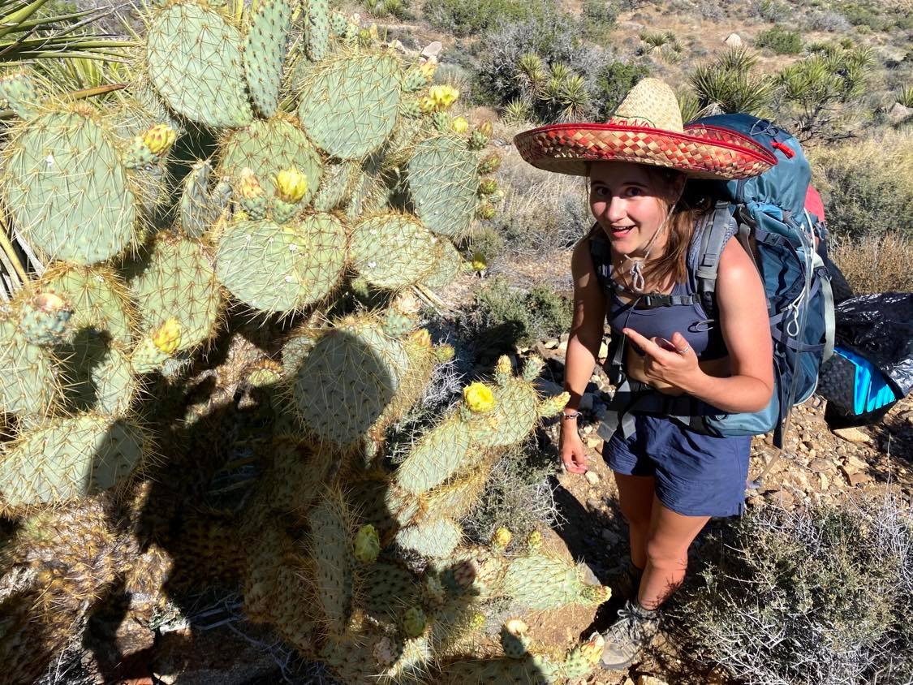
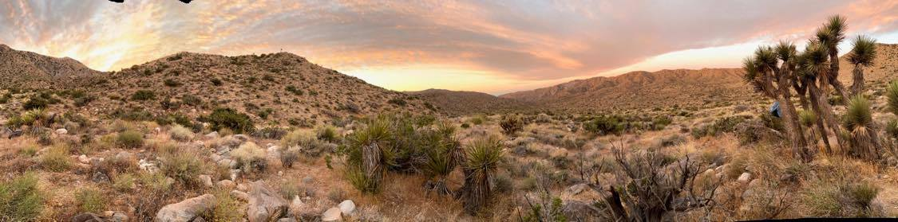
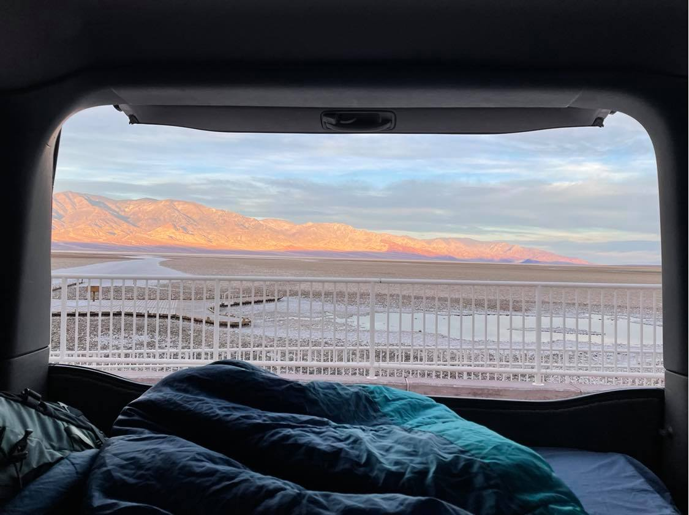
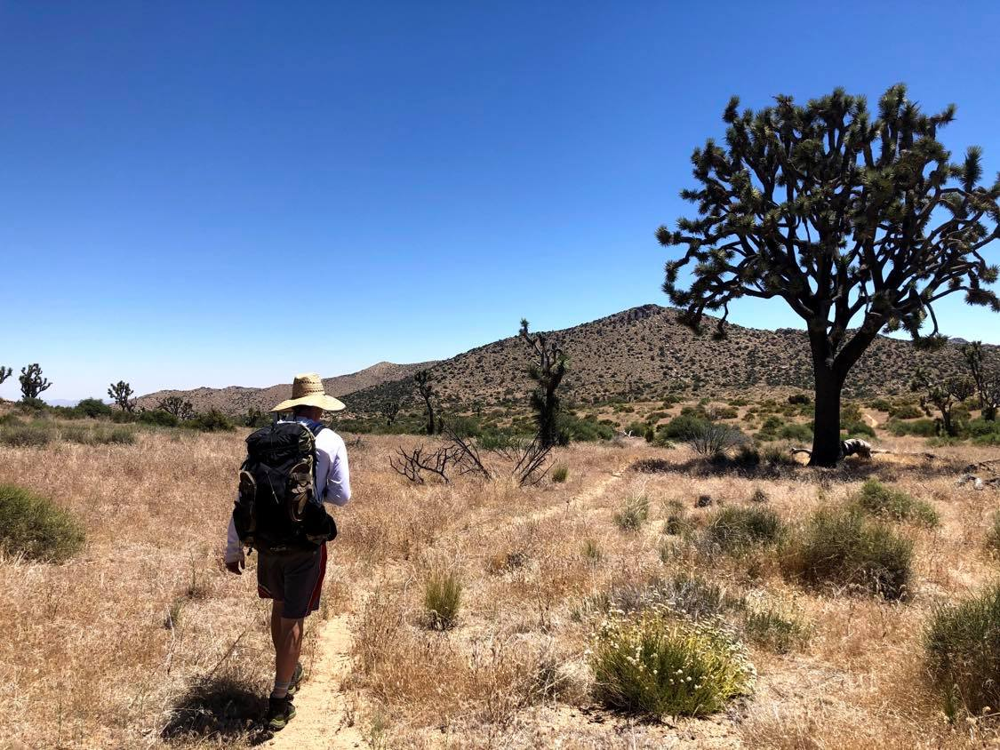
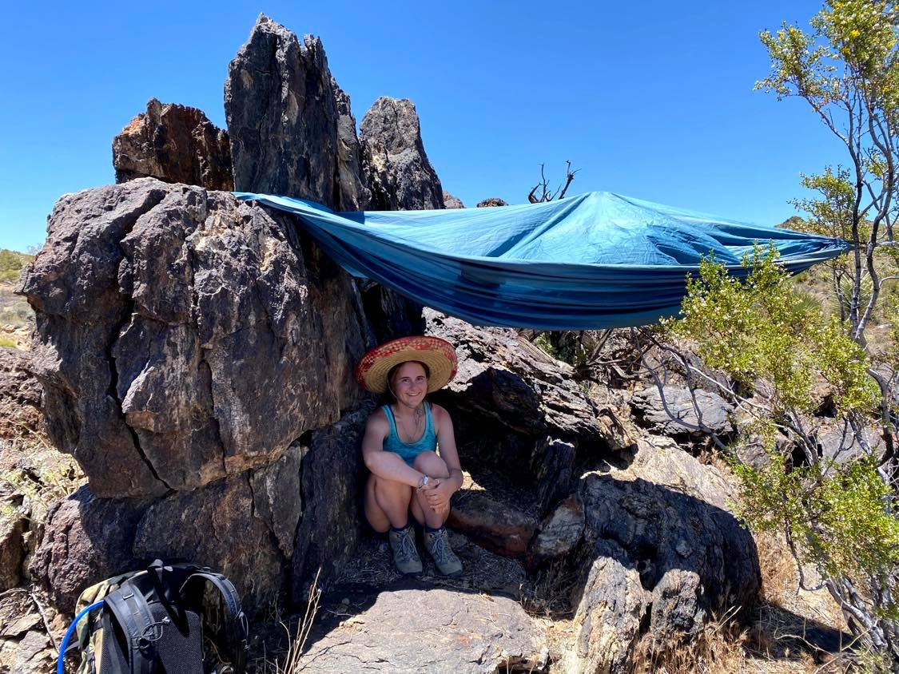
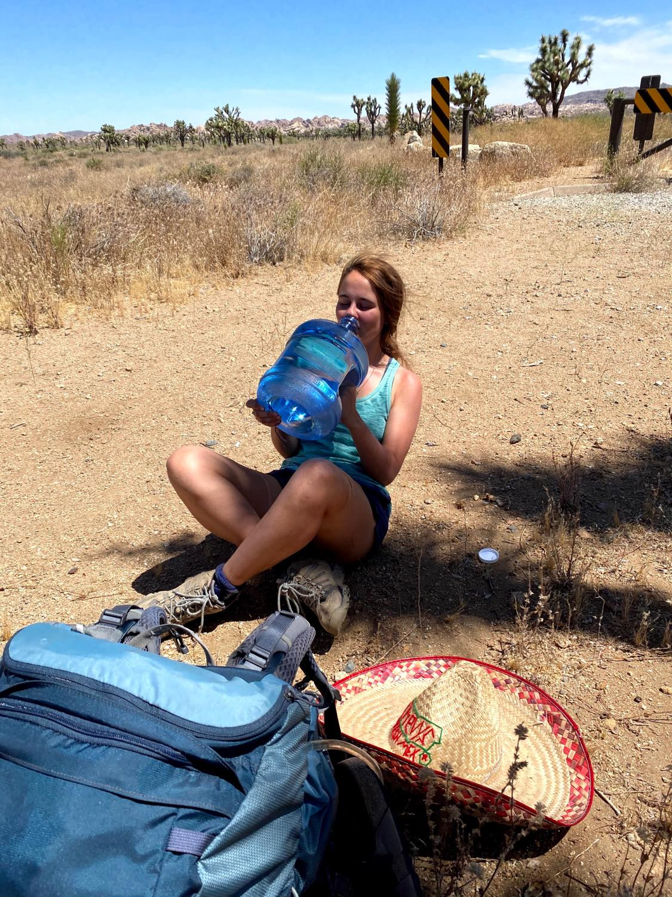
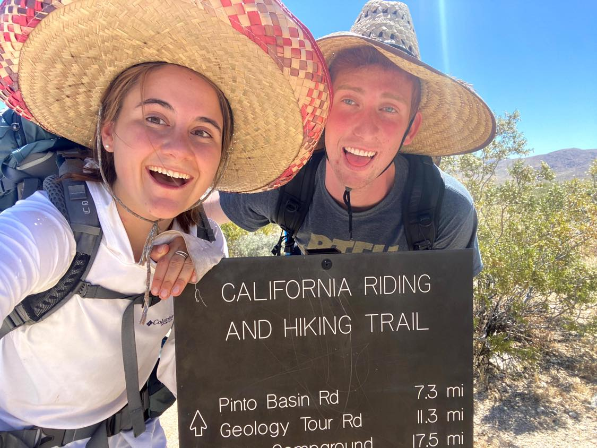
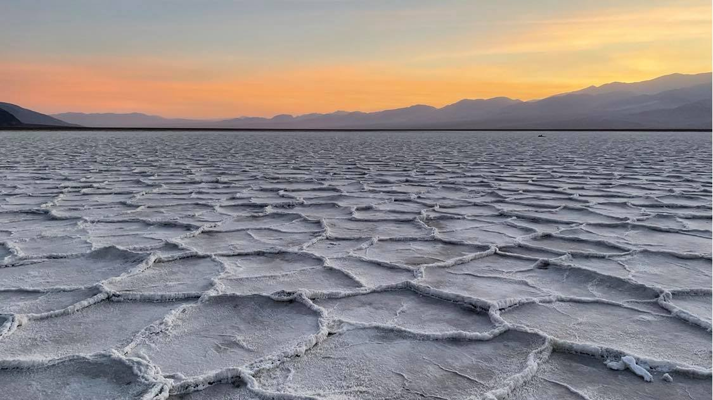
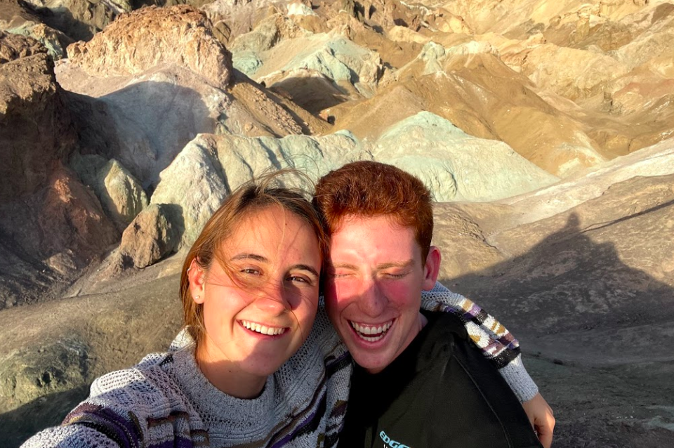

CALIFORNIA: SOUTH SECTION



When you hear Joshua Tree and Death Valley you probably think of desert and heat, but there is so much more to these parks!
There are endless hikes and places to explore in Death Valley because it is the BIGGEST National Park.
Joshua Tree has an amazing backpacking trail that snakes through the entire park.
Take a peek at an awesome backpacking trail and some day hikes!
JOSHUA TREE: CALIFORNIA HIKING AND RIDING TRAIL
Level: Difficult ~ 37.6 miles
Location: Joshua Tree National Park


I don't think I have ever been so exhausted and sweaty! Backpacking in the desert during the summer can be an awesome experience. Just remember to pack EXTRA water and sun protection, like a big sombrero :)
JOSHUA TREE ITINERARY
DAY 1 ~ Trailhead to the middle of the desert (lol), 12 miles. This trail takes you through valleys full of Joshua trees, but the best part is that it is remarkably quiet there. We found a spot to camp near a few trees and hung our hammock over the short ones... which was a massive mistake. Even baby trees can pierce through you like a knife. But the sunset that night spread vibrant colors all over the endless valley that surrounded us.


DAY 2 ~ Middle of nowhere to Jumbo Rocks, 16 miles. We started the day off a bit cold thinking that the temperature would stay low, but by 9am it was already in the high 80s F. This part of the trail when through some campgrounds. We also reached the spot where we cached our extra water before we started, around the middle of the trail where it meets the main road. Once we reached Jumbo Rocks we were pooped so we set up the tent on top of a large rock pile overlooking another valley.
DAY 3 ~ Jumbo Rocks to the trailhead, 9 miles. When we woke up we were in a bit of a sendy mood so we finished up the trail very quickly. But the last 2 miles to the car felt endless. There are mile markers throughout the entire trail so we were just waiting to see the numbers decrease!
DEATH VALLEY NATIONAL PARK
This infite valley is known for being the lowest point in the US. Check out the unique salt flat that makes Badwater Basin so famous. Another great spot is Artists Palette, which is a rock structure that has light shades of green, blue, and pink.
Things to do in Death Valley National Park
Badwater Basin

This spot is so awesome! Good top is that if push comes to shove you can camp the night in the Badwater Basin parking lot, but make sure to stay in your car. We walked pretty far out on the salt flats and sat down to watch the sunset. I would recommend bringing a blanket because it gets really windy out in the middle.
Artists Palette

Check out this colorful spot that is close to the side of the road. This isn't much of a hike, but you can climb some of the taller rocks to get more of a view of the palette. Artists Palette is about 30 minutes away from Badwater Basin, so you can hit both of them!
Back to Home